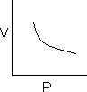
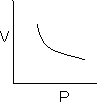
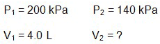
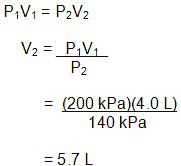
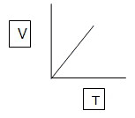

Unit 5: Gases and Atmospheric Chemistry
Activity 2: Relationships
Content
Journal

|
Remember to keep track of any important points, diagrams, and explanations as you are proceeding through this activity. You should be making notes that you understand. |
|---|
In summary, the Kinetic Molecular Theory for moving molecules of ideal gases is as follows:
- Gases are made up of a large number of molecules which move in a continuous and random motion.
Note: The molecule is considered to be the smallest part of a gas. In the case of a noble gas, the smallest particle is an atom. - The combined total volume of all the molecules of gas is negligible compared to the volume which it occupies.
- The forces of attraction and repulsion between molecules of a gas are negligible.
- The collisions of gas molecules are perfectly elastic. There is a transfer of energy at the collision, but the maintenance of a constant temperature ensures their continued motion.
- The average kinetic energy of the gas molecules is directly dependent on temperature.
Behaviour of Gases and Gas Laws
The quantitative perspective describing the behaviour of gases involves the following physical properties and their respective symbols and units:
P = pressure of the gas, measured in Pascals (Pa) or kilopascals (kPa) in the metric system and psi in the imperial system
V = volume of the gas, measured in litres (L) or m3
T = temperature of the gas, measured in Kelvins (T (K) = T (°C + 273.15)
n = amount of gas measured in moles (mol)
Boyle’s Law

|
StopBefore you go further with the upcoming interactive model, you should pay attention to the following:
|
|---|

|
Watch and participate in the interactive model, GasLab. Please be aware, that, depending on your Internet connection speed, all clips on this page may take a few minutes to download. You can always continue reading the remainder of this page while you wait. |
|---|
In the interactive model showing the relationship between volume and pressure, the line of the graph indicates an indirect relationship- V  1/P.
1/P.
Graphically, the relationships look like the following:
|  |  |
The graph for V = 1/P is as follows:
 |
Boyle’s law states that at a constant temperature, the volume of a fixed mass of a gas is inversely proportional to its pressure. In other words, when volume increases, the pressure will decrease.
The relationship, V  1/P, can be turned into an equation by introducing a constant, thereby changing the proportionality sign,
1/P, can be turned into an equation by introducing a constant, thereby changing the proportionality sign, , into an equals sign. The result is V = K/P. Rearranging this equation, it can be shown as PV = K.
, into an equals sign. The result is V = K/P. Rearranging this equation, it can be shown as PV = K.
When temperature and the mass of the gas are fixed, the equation can be used to calculate a new pressure or volume when there are changes to the pressure and volume. The transfer of a gas from one tank to another, with a different volume and pressure, is an example where you would use the following:
P1V1 = P2V2
 Example
Example
If 4.0 L of nitrogen gas has a pressure of 200 kPa and the pressure is decreased to 140 kPa, what is the final volume of the gas?
 Sample Solution
Sample Solution
Given |
Solution |

|
 |
 Check Your Understanding
Check Your Understanding
- A volume of 25.0 L of an ideal gas is at 202 kPa pressure and the volume changes to 10.0 L. Find the new pressure of the gas.
 Answer
Answer
Charles's Law
|
|
StopBefore you go further with the upcoming interactive model, you should pay attention to the following:
|
|---|
|
|
Watch and participate in the interactive model, GasLab. Please be aware, that, depending on your Internet connection speed, all clips on this page may take a few minutes to download. You can always continue reading the remainder of this page while you wait. |
|---|
In the interactive model showing the relationship between volume and pressure, the line of the graph indicates a direct relationship- V  T.
T.

Charles’s law states that at a constant pressure, the volume of a fixed mass of a gas is directly proportional to its temperature. In other words, when volume increases, the temperature will increase.
The relationship, V  T, can be turned into an equation by introducing a constant, thereby changing the proportionality sign,
T, can be turned into an equation by introducing a constant, thereby changing the proportionality sign,  , into an equals sign. The result is V = KT. Rearranging this equation, it can be shown as V/T = K.
, into an equals sign. The result is V = KT. Rearranging this equation, it can be shown as V/T = K.
This is a disclaimer. External Resources will open in a new window. Not responsible for external content.
Unless otherwise indicated, all images in this Activity are from the public domain or are © clipart.com or Microsoft clipart and are used with permission.